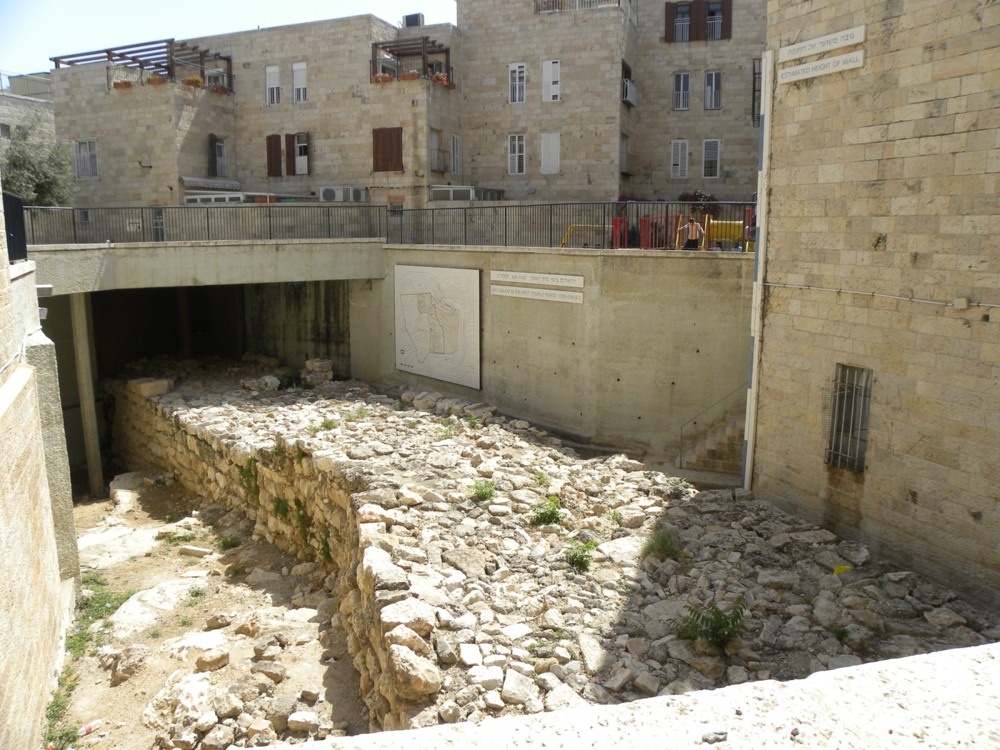

Hezekiah's Broad Wall

- Find Name
- Hezekiah's Broad Wall
- Historical Period
- Iron Age II
- Artifact Date
- Late 8th century BC (reign of Hezekiah)
- Date Discovered
- 1969–1982 (excavated)
- Discovery Location
- Jewish Quarter, Jerusalem, Israel
- Current Location
- In situ, Jewish Quarter, Jerusalem
- Timeline Era
- Divided Monarchy
- Description
- A massive defensive wall, some seven metres thick, uncovered by Nahman Avigad in Jerusalem's Jewish Quarter. Hezekiah built it as Sennacherib's army approached in 701 BC, widening the city's defences and, as Isaiah says, pulling down houses to fortify the wall.
- Biblical Significance
- Here is Hezekiah's crisis in stone: a king who trusted God and still built the wall. The passage that says he 'built up all the wall that was broken down' is no longer an abstraction — its thickness can be walked beside, and the houses it displaced explain Isaiah's sober warning that fortifications without repentance are not enough.
- Evidence Class
- Direct
- Interpretations
- Scholars broadly identify this wall with Hezekiah's fortification described in Isaiah 22 and 2 Chronicles 32; the dating to the late 8th century BC is widely accepted.
- Scripture Illuminated
- Related People
- Related Books
- Related Places
- Related Events
Awaiting Review Not yet checked against scholarly sources. Treat its claims as provisional until this entry is reviewed. About verification
Last reviewed: not yet reviewed